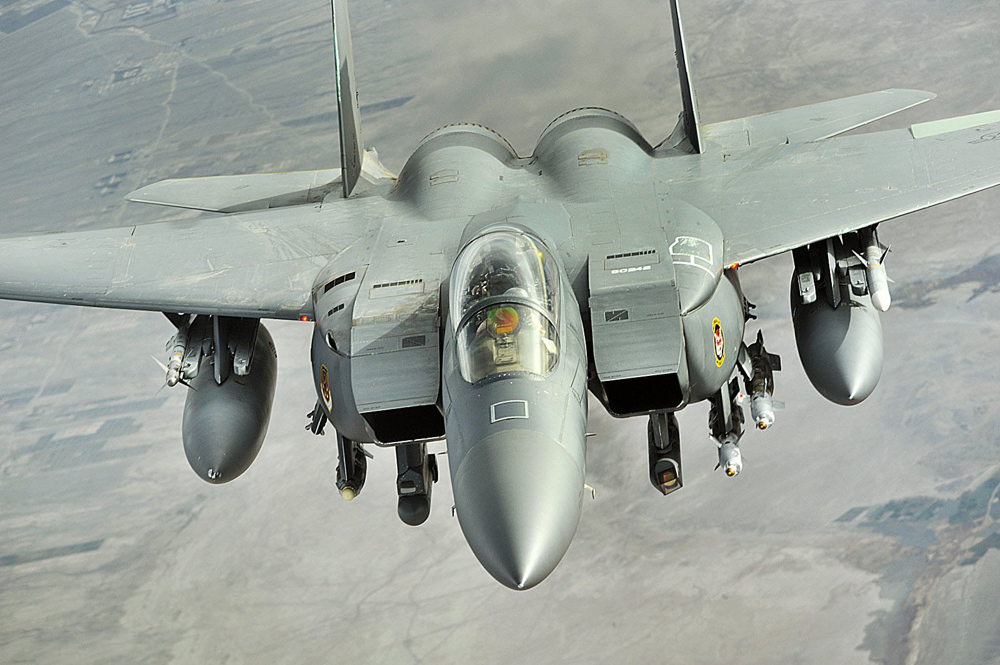

The McDonnell Douglas F-15 Eagle is an American twin-engine, all-weather tactical fighter aircraft designed by McDonnell Douglas (now part of Boeing). Following reviews of proposals, the United States Air Force selected McDonnell Douglas's design in 1969 to meet the service's need for a dedicated air superiority fighter.The Eagle first flew in July 1972, and entered service in 1976. It is among the most successful modern fighters, with over 100 victories and no losses in aerial combat, with the majority of the kills by the Israeli Air Force.
The F-15 can trace its origins to the early Vietnam War, when the U.S. Air Force and U.S. Navy fought each other over future tactical aircraft. Defense Secretary Robert McNamara was pressing for both services to use as many common aircraft as possible, even if performance compromises were involved. As part of this policy, the USAF and Navy had embarked on the TFX (F-111) program, aiming to deliver a medium-range interdiction aircraft for the Air Force that would also serve as a long-range interceptor aircraft for the Navy.[5] In January 1965, Secretary McNamara asked the Air Force to consider a new low-cost tactical fighter design for short-range roles and close air support to replace several types like the F-100 Super Sabre and various light bombers then in service. Several existing designs could fill this role; the Navy favored the Douglas A-4 Skyhawk and LTV A-7 Corsair II, which were pure attack aircraft, while the Air Force was more interested in the Northrop F-5 fighter with a secondary attack capability. The A-4 and A-7 were more capable in the attack role, while the F-5 less so, but could defend itself. If the Air Force chose a pure attack design, maintaining air superiority would be a priority for a new airframe. The next month, a report on light tactical aircraft suggested the Air Force purchase the F-5 or A-7, and consider a new higher-performance aircraft to ensure its air superiority. This point was reinforced after the loss of two Republic F-105 Thunderchief aircraft to obsolete MiG-17s on 4 April 1965.[5] In April 1965, Harold Brown, at that time director of the Department of Defense Research and Engineering, stated the favored position was to consider the F-5 and begin studies of an "F-X".[N 1] These early studies envisioned a production run of 800 to 1,000 aircraft and stressed maneuverability over speed; it also stated that the aircraft would not be considered without some level of ground-attack capability.[6] On 1 August, Gabriel Disosway took command of Tactical Air Command and reiterated calls for the F-X, but lowered the required performance from Mach 3.0 to 2.5 to lower costs.[7] An official requirements document for an air superiority fighter was finalized in October 1965, and sent out as a request for proposals to 13 companies on 8 December. Meanwhile, the Air Force chose the A-7 over the F-5 for the support role on 5 November 1965,[8] giving further impetus for an air superiority design as the A-7 lacked any credible air-to-air capability. Eight companies responded with proposals. Following a downselect, four companies were asked to provide further developments. In total, they developed some 500 design concepts. Typical designs featured variable-sweep wings, weight over 60,000 pounds (27,000 kg), included a top speed of Mach 2.7 and a thrust-to-weight ratio of 0.75.[9] When the proposals were studied in July 1966, the aircraft were roughly the size and weight of the TFX F-111, and like that aircraft, were designs that could not be considered an air-superiority fighter.[10]